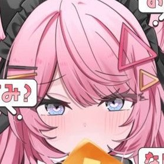
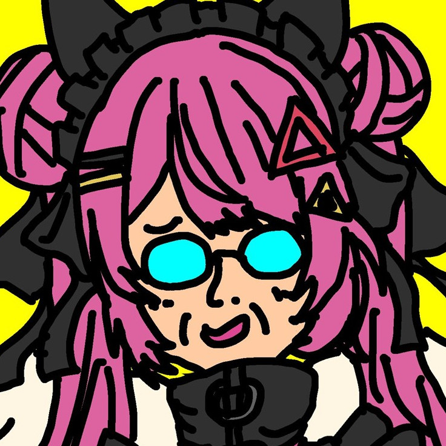
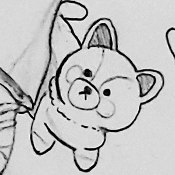
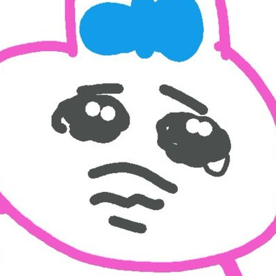
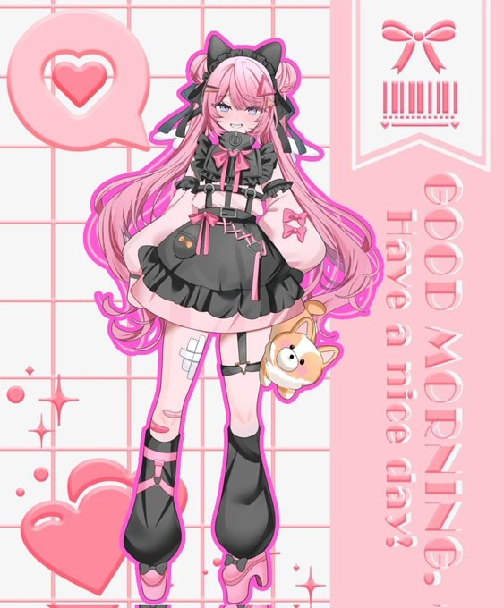

蜜璃 さんかく
Mitsuri Sankaku
「LIVEwithそぞく…。LIVEwithしょじょく…。LIVEwith所属の三角形の擬人化Vライバー蜜璃さんかくです！」
ツッコミ体質で、誰とも分け隔てなく接する、普段は明るく元気な三角形。時々メンヘラ×ヤンデレ三角形。リスナーとの口撃戦は見ごたえ抜群！今日も元気にみんなの名前を叫びます！！！
| 初配信 | 2025年7月28日（7月組） |
|---|---|
| ファンネーム | かどっこ、納税者 |
| ファンマーク | 🩷🔺⛓️ |
| 誕生日 | 11月11日 |
| ハッシュタグ | 総合: #さんかくと狂い隊 |
| 好きなもの | アイドリッシュセブン |